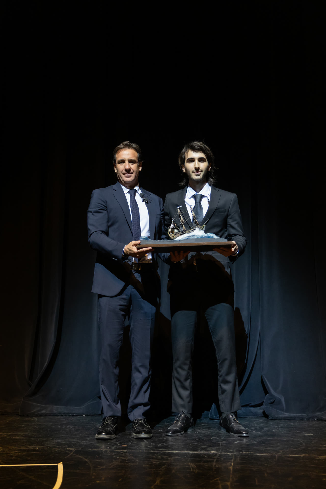

Enero de 1945
Se funda AYAX S.A., dedicada desde el inicio a la industria y el comercio automotriz. Emilio J. Curcio la funda con 22 años.
[ 01 ]Historia · 1945–2026

La historia de AYAX y de Alejandro Curcio no es la de un apellido que se repite. Es la de una empresa que casi murió dos veces y de un hombre que aprendió a nadar antes de saber que estaba en aguas profundas.
Ver la línea de tiempo[ 02 ]Ochenta años, en orden
Dos crisis casi la matan — 1982 y 1999–2001. Ninguna de las dos se cuenta más chica que las victorias que las rodean.
Se funda AYAX S.A., dedicada desde el inicio a la industria y el comercio automotriz. Emilio J. Curcio la funda con 22 años.
A principios de los sesenta, AYAX construye la primera fábrica uruguaya de ensamblaje para el Fiat 600 R. Bajo Emilio J. Curcio, Fiat llega al 38% del mercado.
Se negocia la venta de la operación FIAT a FIAT Italia. Ese mismo año, Ayax obtiene la representación de Toyota.
Con Toyota llegan valores que no se negocian: respeto, disciplina, mejora continua. Kaizen. A fines de los setenta se suma Suzuki.
Crisis económica que la empresa atraviesa y sobrevive — Alejandro la relata en su discurso de los 80 años como parte del temple de la casa.
Mi padre nunca se da por vencido, incluso teniendo todos los pronósticos en contra.
Eso es lo que Alejandro recibió: conducta observada, no plata servida.
Alejandro asume como director de Ayax.
Segunda gran crisis, vivida por Alejandro como director joven (la relata como formativa: tenía 24 años al inicio de su etapa directiva).
2001 es además el año bisagra personal: cáncer de piel, divorcio y casi-quiebra de la empresa, todo mientras está en Japón durante el 11-S.
El dinero es una invención, no es real; lo único verdadero son las ideas que terminan manifestándose en el mundo real a través de una gran obra.
2016: accidente de kitesurf en José Ignacio. Queda varado en el mar sin vela ni tabla, sangrando, lejos de la costa. Sobrevive nadando durante horas.
Pará —me dije—. Tranquilo. El pánico te mata y el miedo te salva.
De esa experiencia nace después el protocolo de gestión emocional que sistematiza en su primer libro.
Don Emilio J. Curcio distribuye las acciones de la compañía entre sus hijos y nietos. Alejandro ya lidera la compañía.
Se formaliza el 'Estilo Comercial Curcio Capital 2017', el documento madre de cultura y principios que hoy vive en curciocapital.com.
Ayax celebra 50 años de Toyota en Uruguay. Alejandro repasa la historia industrial y el respaldo de la marca (Hilux, red de talleres, valor de reventa). Publica su primer libro, "Capital de Vida. Legado de valores en la cultura empresarial y familiar", con prólogo de Hugo Burel.
Dejarle algo valioso a la siguiente generación involucra mucho más que dinero.
Ayax lanza el HY Project: un sistema de sonido para híbridos y eléctricos que regenera plantas, pionero a nivel mundial.
En plena pandemia, da entrevistas sobre liderazgo en crisis ("No hay que ser rehenes del pánico"). Curcio Capital dona 5.000 máscaras hi-tech a la Policía.
El HY Project, desarrollado junto a The Electric Factory y Ayax Toyota, gana en Cannes Lions.
Es elegido Empresario del Año 2022 (Oro, InfoNegocios).
Publica su segundo libro, "Toolbook: Herramientas para comprender el mundo que viene", sobre IA y la cuarta revolución industrial.
Nos templaron, nos forjaron, nos afilaron, nos hicieron más duros, pero también mucho más humanos.
Es orador en los MeetUps de la FIUM (Universidad de Montevideo) sobre movilidad, sostenibilidad e hidrógeno. Presenta el primer vehículo a hidrógeno del país. Curcio Capital organiza el Ice Challenge 2024 (13 de abril de 2024, Montevideo) y logra el récord Guinness al mayor número de personas tomando un baño de hielo simultáneamente — Alejandro participa en el barril junto a los demás (evidencia fotográfica oficial con sello Guinness, ver Inventario de Imágenes serie 4). Forbes Uruguay difunde el proyecto inmobiliario El Nido.
Ayax celebra 80 años de historia con una gala en el Sodre, con la presencia del presidente Yamandú Orsi, expresidentes y los embajadores de Japón y EE.UU. Alejandro da un discurso sobre legado, desafíos y gratitud, y anuncia públicamente el comienzo de la transición a las nuevas generaciones: "A mis hijos Luca, Camila y Paulina… este legado es suyo".
A mis hijos Luca, Camila y Paulina… este legado es suyo.
La misma idea, dicha en otras palabras, un año después:
Una empresa familiar no se vuelve sostenible porque un apellido se repita, sino porque cada generación entiende que recibe algo que debe mejorar y entregar más fuerte.
Lanzamiento del Toyota bZ4X, primer SUV eléctrico japonés en Uruguay, con Alejandro como vocero de la estrategia de electrificación y garantía. Entrevista extensa en El País sobre el cambio de paradigma de la industria automotriz. Lanzamiento de CEO DE TU VIDA.
Los fabricantes construyen grandes automóviles; las grandes empresas representantes construyen relaciones que duran toda la vida útil de esos automóviles.
Ochenta años después de aquel enero fundacional, la definición que mejor resume lo que queda es la de Alejandro mismo:
Es una entidad viva. Yo a veces pienso que es como una construcción colectiva que late.
El nuestro es claro: ser un puente entre un pasado que nos honra y un futuro que nos desafía.